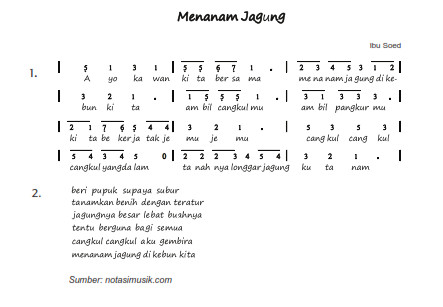

Ayo Bernyanyi
Aktivitas
Nah kalian sudah mempelajari manfaat energi panas matahari. Salah satu manfaat
energi panas matahari adalah untuk membantu pertumbuhan tanaman jagung.
Nyanyikanlah lagu “Menanam Jagung” dan bacalah notasi angkanya. Gerakkan tangan
dan badanmu sesuai dengan tinggi rendah nada.
Selalu Berhemat Energi
Yuk, kita menyanyikan lagu “Menanam Jagung” sesuai dengan notasinya.
